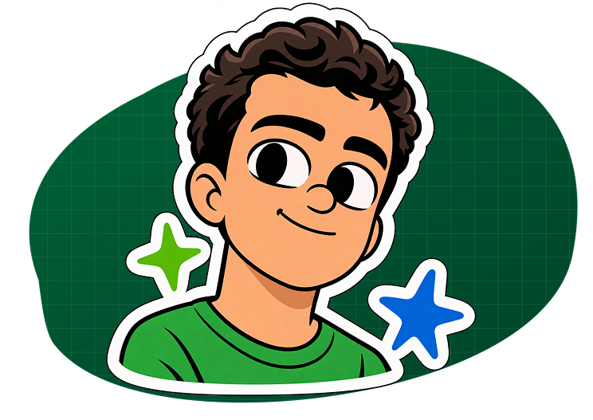
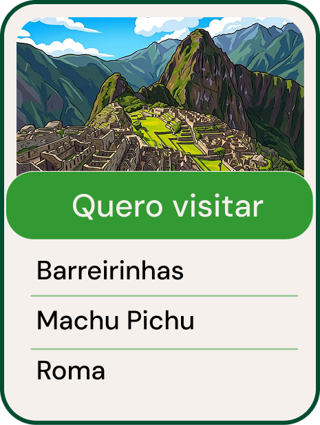

Pedro Almeida Rufino

Uma página pessoal com meus interesses, curiosidades, lugares marcantes e habilidades.



Sobre mim
Sou uma pessoa calma e dificilmente fico bravo. Sou mais reservado, mas costumo conversar e resolver as coisas de forma amigável, buscando a melhor solução. Também sou organizado no dia a dia. Gosto muito de nadar e de montar LEGO que são meus hobbies favoritos.

15 anos
21/12/2010

Perto do Shopping Tietê e da Faculdade Anhanguera

Calmo e reservado

Pensamento analítico

Criativo
Favoritos

Coisas que eu gosto, curiosidades sobre mim e minhas músicas e livros preferidos.
Interesses
Livros
Marvel
Filmes
Lego
Natação
Curiosidades
- Morei 8 anos em São Bernardo do Campo
- Torço para o Santos
- Ganhei uma medalha na OBMEP
- Tenho uma cachorro chamada Cristal
Cantores e livros
Bruno Mars
Coldplay


Lugares




Habilidades
Tecnologias e competências que uso para criar, resolver problemas e tirar ideias do papel.